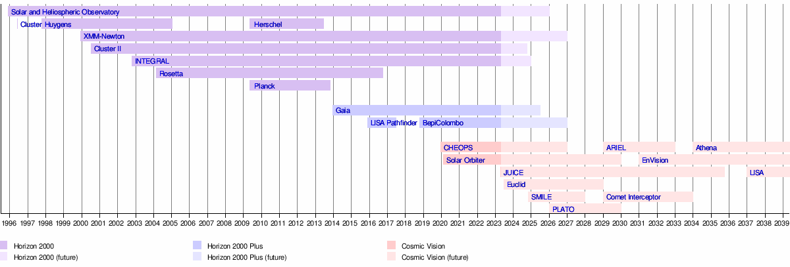

Cosmic Vision Programme
Cosmic Vision is the third campaign of space science and space exploration missions in the Science Programme of the European Space Agency (ESA). Formulated in 2005 as Cosmic Vision: Space Science for Europe 2015–2025, the campaign succeeded the Horizon 2000 Plus campaign and envisioned a number of missions in the fields of astronomy and solar system exploration beyond 2015. Ten missions across four funding categories are planned to be launched under Cosmic Vision, with the first being CHEOPS in December 2019. A mission to the Galilean moons (JUICE), the first deep space mission with an opportunistic target (Comet Interceptor), and one of the first gravitational-wave space observatories (LISA), are planned for launch as part of the Cosmic Vision campaign.
History
The initial call of ideas and concepts was launched in 2004 with a subsequent workshop held in Paris to define more fully the themes of the Vision under the broader headings of Astronomy and Astrophysics, Solar System Exploration and Fundamental Physics.
By early 2006, the formulation for a 10-year plan based around 4 key questions emerged:
- What are the conditions for planet formation and the emergence of life?
- How does the Solar System work?
- What are the fundamental physical laws of the Universe?
- How did the Universe originate and what is it made of?
In March 2007, a call for mission ideas was formally released, which yielded in 19 astrophysics, 12 fundamental physics and 19 Solar System mission proposals.
In March 2012, ESA announced it had begun working on a series of small class (S-class) science missions. The first winning S-class concept is set to receive 50 million euros (£42m) and will be readied for launch in 2017.
Missions
Small class
Small class missions (S-class) are intended to have a cost to ESA not exceeding 50 million euros. A first call for mission proposals was issued in March 2012.[3] Approximately 70 letters of Intent were received.[4] In October 2012 the first S-class mission was selected.[5] The current list of S-class missions include the following:
- S1, CHEOPS, to measure known exoplanets' size by photometry; launched on 18 December 2019.
- S2, SMILE, a joint mission between ESA and the Chinese Academy of Sciences to study the interaction between Earth's magnetosphere and the solar wind. SMILE was selected in June 2015 from thirteen competing proposals. As of February 2023, its launch is planned for April 2025.
Medium class
Medium class (M-class) projects are relatively stand-alone projects and have a price cap of approximately 500 million euros. The first two M-class missions, M1 and M2, were selected in October 2011. The M6 mission opportunity was cancelled in 2019 due to budgetary pressures.
- M1, Solar Orbiter, a heliophysics mission to make close-up observations of the Sun; launched on 10 February 2020.
- M2, Euclid, a visible to near-infrared space telescope to study dark energy and dark matter; launch planned for early 2023.
- M3, PLATO, a mission to search for exoplanets and measure stellar oscillations. Selected on 19 February 2014, its launch is planned for 2026. Other competing concepts that were studied included EChO, LOFT, MarcoPolo-R, and STE-QUEST.
- M4, ARIEL (Atmospheric Remote-Sensing Infrared Exoplanet Large-survey), a space observatory which will observe transits of nearby exoplanets to determine their chemical composition and physical conditions. The mission was selected by ESA on 20 March 2018 as the fourth medium-class science mission, to be launched in 2029. After a preliminary culling of proposals in March 2015, a short list of three mission proposals selected for further study was announced on 4 June 2015. The shortlist included the following two proposals: THOR (Turbulence Heating ObserveR) which would address a fundamental problem in space plasma physics concerned with the heating of plasma and the subsequent dissipation of energy; and XIPE (X-ray Imaging Polarimetry Explorer) which would study X-ray emissions from high-energy sources such as supernovas, galaxy jets, black holes and neutron stars, to discover more about the behaviour of matter under extreme conditions.
- M5, EnVision, a mission to conduct high-resolution radar-mapping of select regions of the surface of Venus, as well as conduct atmospheric studies. The mission was selected in June 2021 and will launch in 2031. The call for M5 mission proposals was announced in April 2016. In May 2018, a shortlist of three candidate missions was announced, with the other two proposals being: SPICA (SPace Infrared telescope for Cosmology and Astrophysics), a far-infrared observatory; and THESEUS (Transient High-Energy Sky and Early Universe Surveyor), a space telescope to detect distant gamma-ray bursts. In October 2020, ESA announced that SPICA was no longer being considered as a candidate for the M5 mission.
- The M7 mission opportunity is currently being competed. In November 2022, five candidate missions were selected for further study: CALICO, HAYDN, M-MATISSE, Plasma Observatory, and THESEUS (M5 candidate).
Large class
Originally it was intended that Large class (L-class) projects were to be carried out in collaboration with other partners and should have an ESA cost not exceeding 900 million euros. However, in April 2011 it became clear that budget pressures in the US meant that an expected collaboration with NASA on the L1 mission would not be practical; so the down-selection was delayed and the missions re-scoped on the assumption of ESA lead with some limited international participation.
Three L-class missions have been selected:
- L1, JUICE (Jupiter Icy Moon Explorer), a mission to the Jupiter system (with heritage from Laplace); launched on 14 April 2023.
- L2, Athena (Advanced Telescope for High Energy Astrophysics), an X-ray observatory with a launch planned for 2035.
- L3, LISA (Laser Interferometer Space Antenna), a space mission concept designed to detect and accurately measure gravitational waves at lower frequencies than Earth-bound detectors. Its launch is planned for 2037.
Fast class
At the ESA Science Programme Committee (SPC) Workshop on 16 May 2018, the creation of a series of special opportunity Fast class (F-class) missions was proposed. These F-missions would be jointly launched alongside each M-class mission starting from M4, and would focus on "innovative implementation" in order to broaden the range of scientific topics covered by the mission. The inclusion of F-class missions into the Cosmic Vision program would require a significant increase of the science budget, to be discussed in future meetings.
Two F-class missions have been selected:
- F1, Comet Interceptor, a mission to study a long-period comet or an interstellar object (which will be determined after the launch), launching as a secondary payload together with M4, ARIEL in 2029.
- F2, ARRAKIHS (Analysis of Resolved Remnants of Accreted galaxies as a Key Instrument for Halo Surveys), a mission to survey one hundred nearby galaxies and their surroundings to investigate the development of dwarf galaxies and stellar streams; launch planned for the early 2030s.
Timeline
Missions of opportunity
Occasionally ESA makes contributions to space missions led by another space agency. These missions include:
- Hinode – X-ray space telescope leading by JAXA, launched in 2006;
- IRIS – solar space spectrograph leading by NASA, launched in 2013;
- Microscope – microsatellite for studying free fall leading by CNES, active in 2016–2018;
- XRISM – X-ray space telescope leading by JAXA, to be launched in 2022;
- ExoMars - a series of Mars probes in collaboration with Roscosmos, an orbiter operational since 2017, a rover to be launched in late 2020s;
- Einstein Probe – a space mission dedicated to time-domain high-energy astrophysics leading by CAS, to be launched in 2022;
- PROBA-3 – space technology testing spacecraft, to be launched in 2023;
- MMX – a sample-return Mars' moons probe leading by JAXA, to be launched in 2024;
- Nancy Grace Roman Space Telescope - a space telescope led by NASA, to be launched in 2025.
A contribution to SPICA (Space Infrared Telescope for Cosmology and Astrophysics), a Japanese JAXA mission was evaluated as such a mission of opportunity within the Cosmic Vision. It is no longer considered within that framework, but was one of the finalists being considered for M5.